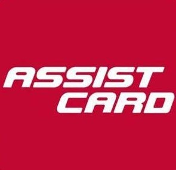
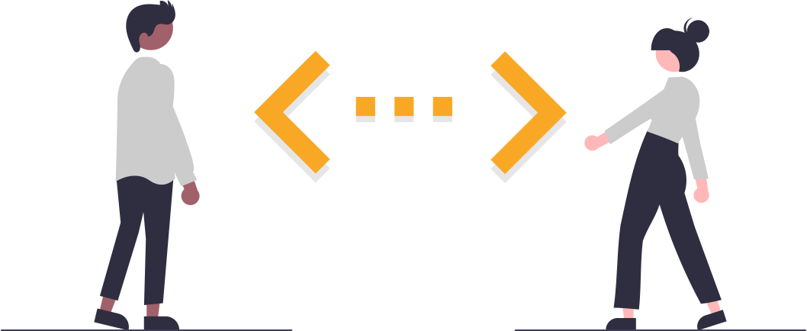
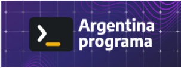

Agustina Witis Ferraria
Desarrolladora Full Stack Jr.
Busco ser parte de un equipo de trabajo innovador y comprometido, que fomente el crecimiento de sus miembros tanto profesional como personalmente. Así mismo, ofrezco mi absoluto compromiso, actitud positiva y proactiva para abordar cualquier tarea o desafío
Experiencia Laboral
Puesto Actual
 Coordinadora de Asistencias
"Actualmente me desempeño como Coordinadora de Asistencias para la empresa de asistencia al viajero ASSIST CARD, desarrollando tareas de Back Office en el departamento de Casos Complejos. "
Busco cambiar mi perfil a:
Software Developer
"Mi objetivo es poner en práctica los conocimientos de programación que he adquirido, tanto de manera formal como autodidacta. "
Herramientas/Lenguajes :
Github, HTML, CSS, Bootstrap, JavaScript, Angular, JAVA, MySQL.
Estudios
UBA - Filosofía
Licenciatura y Profesorado
Carrera en curso: 80 % aprobado.
 #YoProgramo
Full Stack Jr. - Desarrollo Web y de Aplicaciones
Beca otorgada por el Ministerio de Desarrollo Nacional Argentino, en conjunto con Cessi Argentina e INTI
 Codo a Codo 4.0
Codo a Codo 4.0
Full Stack Java
Orientado a objetos concurrentes y tipeados estático.
Sobre Mí
Mi nombre es Agustina Witis
...tengo 27 años y soy oriunda de la ciudad de Bariloche. En el 2022 fui beneficiada por la beca Argentina Programa, comenzando así a incursionar en el lenguaje de la programación y del desarrollo de Software, lo que me llevo a descubrir esta nueva pasión que ocupa horas y horas de practica, lectura e investigación en mi día a día. Además, estoy finalizando la carrera de Filosofía en la UBA (Universidad de Buenos Aires), la cual también ha implicado un proceso de aprendizage arduo y gratificante a la vez.
He trabajado y estudiado toda mi vida adulta, lo que me volvió una persona previsora y organizada. Sin embargo, no solo soy estricta sino también me considero empática, amigable y respetuosa. Suelo tener una actitud positiva y paciente, ya que he aprendido que la mejor manera de atravesar cualquier dificultad es con buena predisposición y cautelosamente.
Actualmente me desempeño como coordinadora de asistencias en el departamento de casos complejos de la compañía ASSIST CAR. Sin embargo, estoy buscando cambiar mi perfil profesional y redirigirlo hacia el Desarrollo de Software, para seguir creciendo profesionalmente, enfrentar nuevos desafíos y aprender nuevas habilidades; así como para poner en práctica los conocimientos que he adquirido.
En suma, puedo ofrecerles ser una colaboradora comprometida y que siempre busca mejorar.
Gracias por su tiempo!